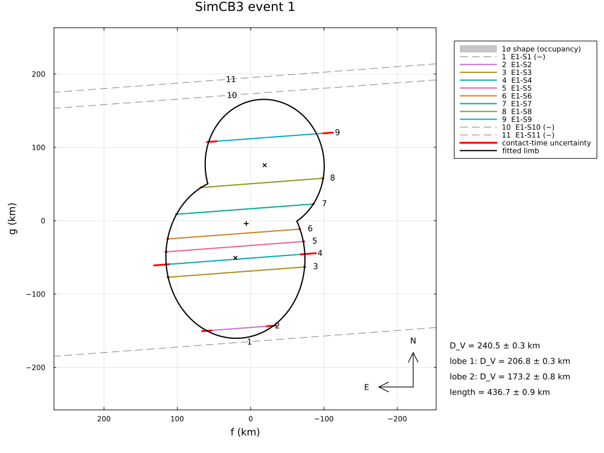
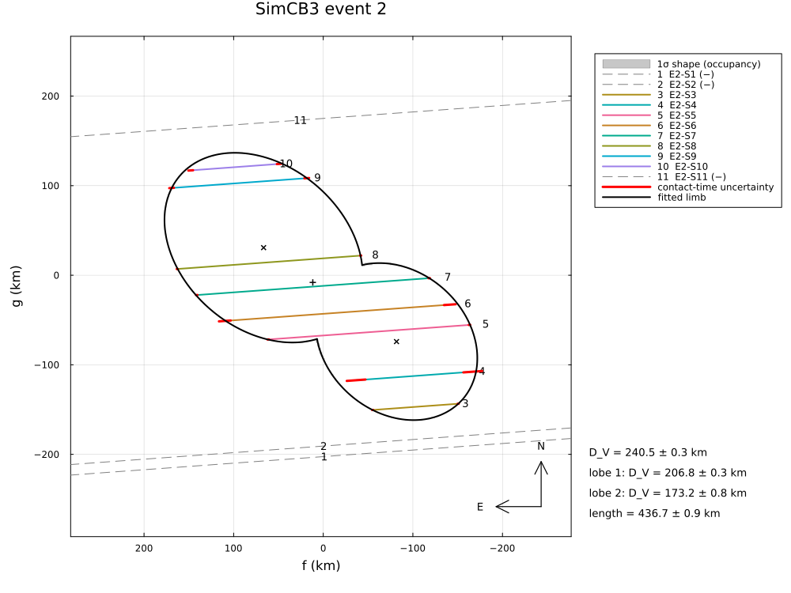
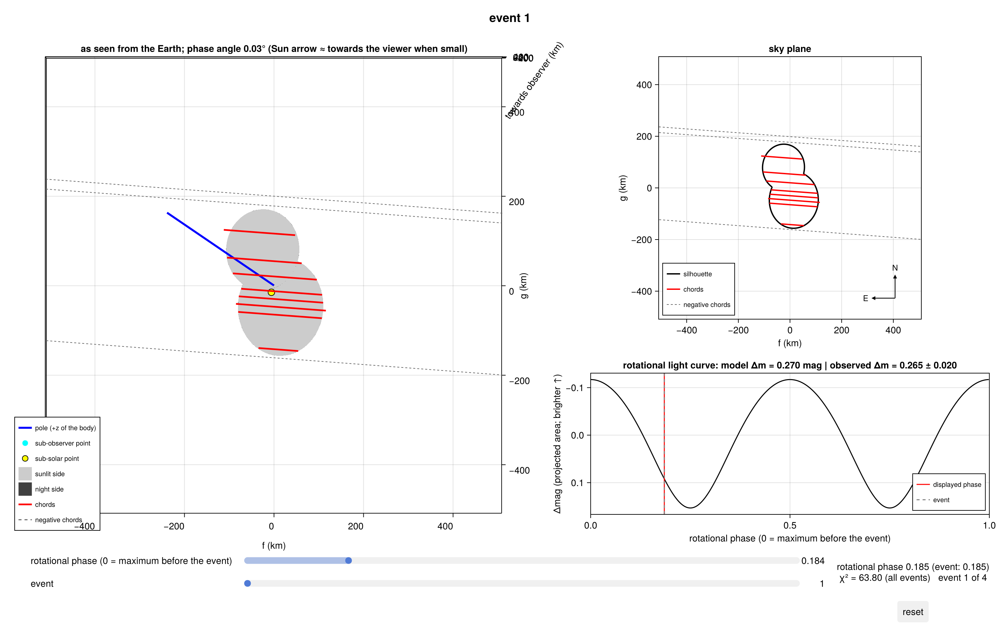

Synthetic: a contact binary in 3-D
Four simulated occultations by a rotating bilobed body, reduced with ContactBinaryEllipsoids: two triaxial ellipsoids on the body x-axis, rotating about z. Three events in one night see the body at different rotational phases, a fourth one a month later; a rotational light-curve amplitude is added. Each event sees the exact silhouette of the two ellipsoids (the union of their projected ellipses), so the events together constrain the 3-D shape of both lobes:
- the simulation: the shape, the pole, the rotation, the chords of each event (eleven stations per event on land and in the dark, with timing accuracies of 0.02–0.4 s);
- the fit with the pole known, from a deliberately poor starting shape;
- the fit with the pole unknown, from a grid of starting poles;
- the shape as an OBJ file and the 3-D view of each event.
Run it with:
julia --project=. examples/sim_contact_binary_3d.jl [output_dir] (default: examples/output/sim_contact_binary_3d)The code is not run when the manual is built. The output after each section is that of the last run of examples/sim_contact_binary_3d.jl, stored in examples/output/sim_contact_binary_3d/output.txt.
using Occultations, Random, Printf, LinearAlgebra
using Plots
import CairoMakie # saves the 3-D views (Makie figures)
include(joinpath(@__DIR__, "sim_stations.jl")) # stations on land, in the dark, with their equipment
out = length(ARGS) >= 1 ? ARGS[1] : mkpath(joinpath(@__DIR__, "output", "sim_contact_binary_3d"))
rng = MersenneTwister(5)1. the simulation
Lobe 1 with semi-axes 130 × 100 × 85 km, lobe 2 with 100 × 85 × 75 km, their centres (a₁ + a₂)(1 − 0.1) = 207 km apart; the pole at RA 35°, Dec 40°, a period of 9.5 h.
truth = BilobedEllipsoid(Ellipsoid(130.0, 100.0, 85.0), Ellipsoid(100.0, 85.0, 75.0), (130.0 + 100.0) * (1 - 0.1))
println(truth)
@printf("volume-equivalent diameter %.1f km, mass ratio %.3f (equal densities)\n", 2volume_equivalent_radius(truth),
volume(truth.lobe2) / volume(truth.lobe1))
eph = EphemKeplerian(a=44.0, e=0.03, i=3.0, Ω=120.0, ω=40.0, M=300.0, epoch=Epoch("2024-01-01"), name="SimCB3")
body = Body("SimCB3", eph; radius=140.0, pole=(35.0, 40.0), rotation_period=9.5, W0=20.0, shape=truth)
t0 = Epoch("2024-12-30T19:00:00")
evs = Event[]
for (k, dt) in enumerate([0.0, 2.1 * 3600, 3.6 * 3600, 30 * 86400 + 1.3 * 3600])
tk = t0 + dt
rak, deck, _ = ephem_radec(body, tk)
st = Star(rak + 0.001 / 3600 / cosd(deck), deck; name="star $k")
e = Event(st, body, tk; name="event $k")
Ok = project(body, e.tref) # the true silhouette at this event
pv = positionv(st, eph, GEOCENTER, e.tref)
n̂ = (-pv.vg, pv.vf) ./ hypot(pv.vf, pv.vg)
c = (6.0k, -4.0k) # ephemeris offset of the event [km]
offs = random_offsets(MersenneTwister(20 + k), 11, -200.0, 200.0; mingap=10.0) .+ (c[1] * n̂[1] + c[2] * n̂[2])
for site in stations(st, body, e.tref, offs; rng=rng, prefix="E$k-S")
o, σ = site.observer, site.equipment[2]
pc = predicted_contacts(e, o, Ok; center=c, window=abs(site.τ) + 200, step=0.05)
span = (e.tref + site.τ - 100, e.tref + site.τ + 100)
cs = reduce(vcat, [[Contact(:immersion, a + σ * randn(rng), σ), Contact(:emersion, b + σ * randn(rng), σ)]
for (a, b) in pc]; init=Contact[])
push!(e, isempty(cs) ? Chord(o.name, o; span=span) : Chord(o.name, o; contacts=cs, span=span))
end
@printf("%s: %d positive chords (%d with two drops), area-equivalent diameter %.1f km\n", e.name,
count(ispositive, e.chords), count(c -> count(x -> x.kind === :immersion, c.contacts) == 2, e.chords),
2equivalent_radius(Ok))
push!(evs, e)
endA rotational light curve observed ten days after the first event, amplitude ± 0.02 mag:
u = normalize(geocentric_vector(eph, t0 + 10 * 86400))
amp = RotationalAmplitude(t0 + 10 * 86400, rotational_amplitude(truth, 35.0, 40.0, u), 0.02)
@printf("rotational amplitude %.3f mag\n", amp.amplitude)BilobedEllipsoid(Ellipsoid(130.000, 100.000, 85.000 km), Ellipsoid(100.000, 85.000, 75.000 km), d = 207.000 km)
volume-equivalent diameter 240.1 km, mass ratio 0.577 (equal densities)
event 1: 8 positive chords (0 with two drops), area-equivalent diameter 251.6 km
event 2: 8 positive chords (0 with two drops), area-equivalent diameter 269.0 km
event 3: 10 positive chords (0 with two drops), area-equivalent diameter 273.1 km
event 4: 10 positive chords (0 with two drops), area-equivalent diameter 266.7 km
rotational amplitude 0.265 mag2. the pole known
The starting shape: two equal lobes, far from the truth; the period and the pole are fixed.
body.shape = BilobedEllipsoid(Ellipsoid(110.0, 95.0, 85.0), Ellipsoid(110.0, 95.0, 85.0), 200.0)
r1 = fit(LimbProblem(evs; model=ContactBinaryEllipsoids(), amplitudes=[amp], fix=[:pole_ra, :pole_dec]); rng=rng)
display(r1)
println("fitted vs true:")
for (n, tv) in ((:a1, 130.0), (:b1, 100.0), (:c1, 85.0), (:a2, 100.0), (:b2, 85.0), (:c2, 75.0), (:neck, 0.1),
(:volume_equivalent_radius, volume_equivalent_radius(truth)),
(:mass_ratio, volume(truth.lobe2) / volume(truth.lobe1)))
@printf(" %-26s %8.3f ± %6.3f (truth %8.3f)\n", n, r1[n]..., tv)
endLimbProblem fit: χ² = 63.803, dof = 57, χ²/dof = 1.119
center_f_1 = 6.010283 ± 0.267969
center_g_1 = -3.951674 ± 0.658959
center_f_2 = 11.670882 ± 0.375741
center_g_2 = -8.038633 ± 0.314731
center_f_3 = 17.698907 ± 0.375141
center_g_3 = -12.225126 ± 0.893856
center_f_4 = 24.345190 ± 0.232509
center_g_4 = -15.627830 ± 0.369006
a1 = 129.633727 ± 0.781538
b1 = 100.494123 ± 0.452300
c1 = 84.886782 ± 0.469779
a2 = 101.867115 ± 1.238419
b2 = 84.782730 ± 0.454353
c2 = 75.234180 ± 0.417914
neck = 0.113664 ± 0.009584
pole_ra = 35.000000 (fixed)
pole_dec = 40.000000 (fixed)
W0 = 20.741047 ± 0.078036
period = 9.500000 (fixed)
derived:
offset_ra_1 = 0.195621 ± 0.008722
offset_dec_1 = -0.128618 ± 0.021448
offset_ra_2 = 0.379861 ± 0.012230
offset_dec_2 = -0.261640 ± 0.010244
offset_ra_3 = 0.576060 ± 0.012210
offset_dec_3 = -0.397900 ± 0.029093
offset_ra_4 = 0.789696 ± 0.007542
offset_dec_4 = -0.506927 ± 0.011970
volume_equivalent_radius = 120.268188 ± 0.166743
lobe1_volume_equivalent_radius = 103.410883 ± 0.156878
lobe2_volume_equivalent_radius = 86.613489 ± 0.391834
mass_ratio = 0.587568 ± 0.008762
separation = 205.187566 ± 1.031719
length = 436.688409 ± 0.850774
area_equivalent_radius_1 = 125.834258 ± 0.112925
aspect_1 = 56.375982 ± 0.000000
rotation_phase_1 = 158.225965 ± 0.078036
area_equivalent_radius_2 = 134.624343 ± 0.152730
aspect_2 = 56.374462 ± 0.000000
rotation_phase_2 = 237.804790 ± 0.078036
area_equivalent_radius_3 = 136.729788 ± 0.186788
aspect_3 = 56.373377 ± 0.000000
rotation_phase_3 = 294.646798 ± 0.078036
area_equivalent_radius_4 = 133.463848 ± 0.136820
aspect_4 = 55.885379 ± 0.000000
rotation_phase_4 = 130.940181 ± 0.078036
fitted vs true:
a1 129.634 ± 0.782 (truth 130.000)
b1 100.494 ± 0.452 (truth 100.000)
c1 84.887 ± 0.470 (truth 85.000)
a2 101.867 ± 1.238 (truth 100.000)
b2 84.783 ± 0.454 (truth 85.000)
c2 75.234 ± 0.418 (truth 75.000)
neck 0.114 ± 0.010 (truth 0.100)
volume_equivalent_radius 120.268 ± 0.167 (truth 120.049)
mass_ratio 0.588 ± 0.009 (truth 0.577)3. the pole unknown
The pole free, from a grid of starting poles (the fit is non-linear in the pole); the best solution is kept.
sols = map([(ra, dec) for ra in (0.0, 90.0, 180.0, 270.0) for dec in (-30.0, 30.0)]) do (pra, pdec)
p = LimbProblem(evs; model=ContactBinaryEllipsoids(), amplitudes=[amp],
init=merge(Dict(zip(r1.names, r1.values)), Dict(:pole_ra => pra, :pole_dec => pdec)),
bounds=Dict(:pole_dec => (-90.0, 90.0)))
r = fit(p; starts=2, rng=rng)
@printf(" start (%5.1f°, %+5.1f°): pole (%6.1f°, %+5.1f°), χ² = %8.2f\n", pra, pdec, r[:pole_ra][1], r[:pole_dec][1], r.chi2)
r
endMost starts end far away (χ² of thousands); one other start finds a second, worse pole (Δχ² ≈ 14): with four events the pole is determined, but a grid of starts is needed to find it.
r2 = sols[argmin([r.chi2 for r in sols])]
@printf("best: pole (%.1f ± %.1f°, %.1f ± %.1f°), truth (35°, 40°); χ² = %.2f for %d degrees of freedom\n",
r2[:pole_ra]..., r2[:pole_dec]..., r2.chi2, r2.dof)
for (n, tv) in ((:a1, 130.0), (:b1, 100.0), (:c1, 85.0), (:a2, 100.0), (:b2, 85.0), (:c2, 75.0), (:neck, 0.1))
@printf(" %-6s %8.3f ± %6.3f (truth %7.3f)\n", n, r2[n]..., tv)
end start ( 0.0°, -30.0°): pole ( 39.8°, +5.8°), χ² = 162901.72
start ( 0.0°, +30.0°): pole ( 35.0°, +39.8°), χ² = 62.70
start ( 90.0°, -30.0°): pole ( 58.8°, +39.4°), χ² = 33410.85
start ( 90.0°, +30.0°): pole ( 35.0°, +39.8°), χ² = 62.70
start (180.0°, -30.0°): pole ( 146.9°, -34.6°), χ² = 122067.73
start (180.0°, +30.0°): pole ( 143.7°, -12.5°), χ² = 67.03
start (270.0°, -30.0°): pole ( 316.0°, +7.4°), χ² = 199058.27
start (270.0°, +30.0°): pole ( 256.1°, +13.1°), χ² = 221709.65
best: pole (35.0 ± 0.2°, 39.8 ± 0.1°), truth (35°, 40°); χ² = 62.70 for 55 degrees of freedom
a1 129.310 ± 0.840 (truth 130.000)
b1 100.501 ± 0.461 (truth 100.000)
c1 84.919 ± 0.508 (truth 85.000)
a2 102.211 ± 1.317 (truth 100.000)
b2 84.995 ± 0.508 (truth 85.000)
c2 75.056 ± 0.470 (truth 75.000)
neck 0.115 ± 0.010 (truth 0.100)4. shape model and 3-D views
sh = Occultations._shape(r1.problem.model, r1.values, r1.problem.setup)
write_obj(joinpath(out, "simcb3_fitted.obj"), ellipsoid_mesh(sh; name="SimCB3 fitted contact binary"))
for k in 1:4
savefig(plot(r1; event=k, title="SimCB3 event $k", size=(1000, 750)), joinpath(out, "contact_binary_3d_event$k.png"))
CairoMakie.save(joinpath(out, "contact_binary_3d_occview_event$k.png"), occview(r1; event=k))
end
println("figures written to ", out)The four events with the fitted silhouettes (the 1σ shape band from the covariance):


The fitted body in the geometry of the first event, with its rotational light curve:
